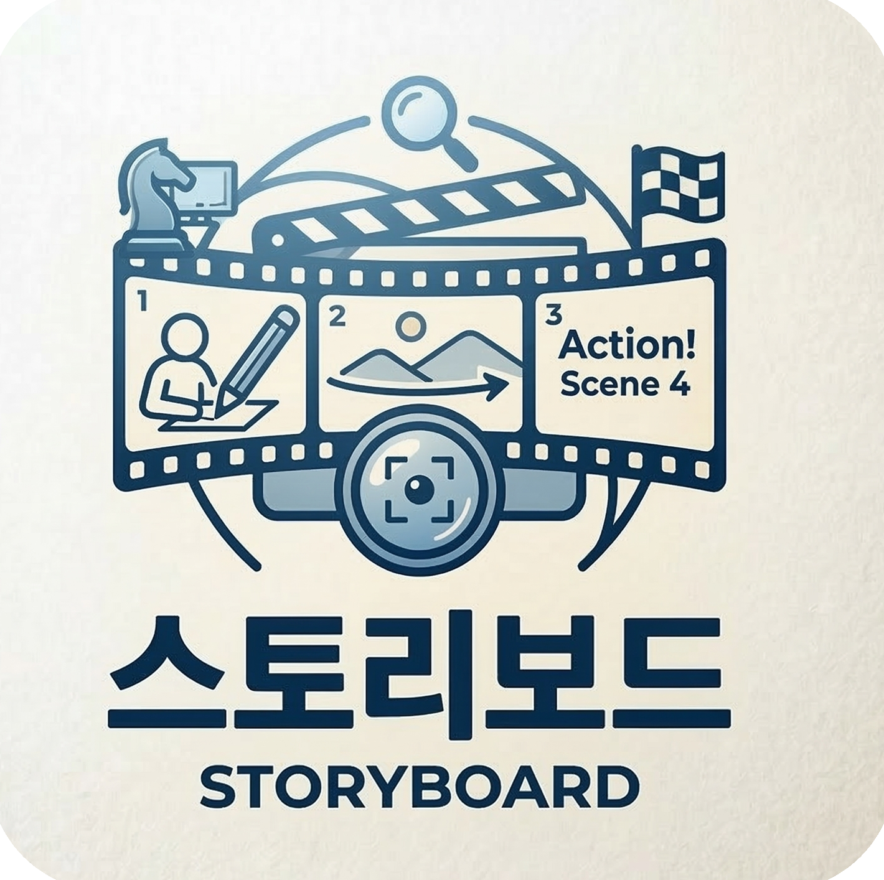
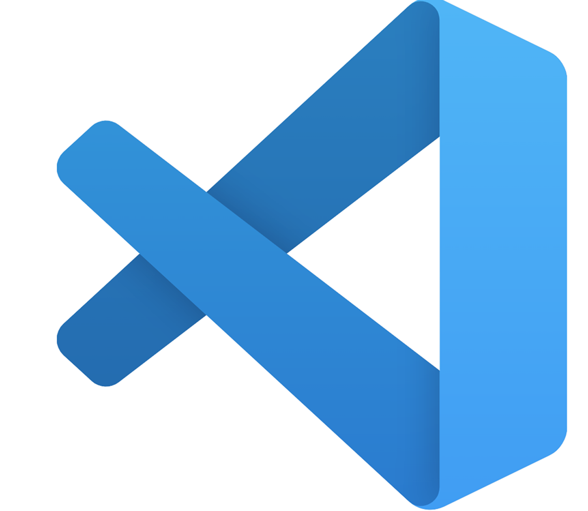

HYEONGFLEX
Profile
박준형PARK_JUN_HYEONG (1998_03_16)
국어국문학과 재학 도중
영상 콘텐츠에 대해 관심이 생겼다.
재학 도중 다양한 영상 콘텐츠 제작경험을 쌓았다.
졸업 후 교육콘텐츠 관련 회사에 들어가
스토리 보드 작성, 플랫폼 개발 및 관리 업무를 전담하였다.
ABILITY





project
MEDIA
- NAME 박준형
- ADDRESS 대구광역시 [북구 태전동 태전역 앞 3분 거리]
- CONTACT [010-3452-8640]
-
YOUTUBE
YOUTUBE(클릭하세요)